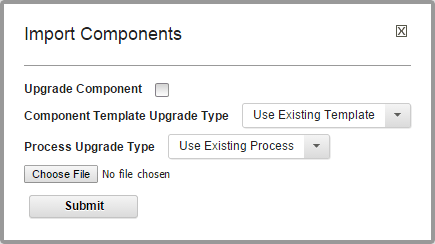

Importing components
Importing and exporting can be especially useful if you have multiple HCL® UrbanCode™ Deploy servers, for example, and must quickly move or update components.
When you import components, you can create components or upgrade existing components. Additionally, if the imported components were created from a template, you can use the template or create one.
When you export components, applications, processes, or templates, and then import them on a different computer, the same versions of the same plug-ins must be installed on both computers.
Note: If the imported components have the Import Versions Automatically parameter set to true, the new components automatically import component versions if the artifacts are accessible to the importing server.
- To import one or more components:
-
Open the Import Component window by clicking Components > Import Components.

-
Click Choose File, and then select the JSON file that contains the component definition.
Note: You must create the JSON file that contains the component definition on a server that uses the same version of HCL UrbanCode Deploy as the destination server.
-
To upgrade existing components, select the Upgrade Component check box. To create components, leave the check box cleared. If the component name in the JSON file (not the name of the file itself) matches an existing component name, then the component parameters are updated. If items such as processes or properties exist, new versions are created. New items, such as processes or properties, are also added. If the name of the component is not found, the import action has no effect.
Note: The component name is the first parameter in the JSON file. This example shows the first parameter:
"name": "helloWorld", -
If the imported components were created from a template, use the Component Template Upgrade Type list to specify how to use the template.For these options, the template must be on the importing server. If the imported components were not created from a template, these options are ignored.
-
To use the imported components' template, select Use Existing Template. The new components are an exact copy of the imported components. They contain a pointer to the imported components' template. This option is especially useful if you are importing many components that are based on the same template.
If you are upgrading, the components also point to the imported template.
-
To create a template, select Create Template. The new components are an exact copy of the imported components. They contain a pointer to the newly created template, which is based on the imported components' template.
If you are upgrading components, a template is also created.
-
To ensure that the server uses the newly imported template, select Fail if Template Exists. In this case, if the server already contains the template, the import action fails.
-
To create a fresh installation and ensure that a template is not on the importing server, select Fail if Template Exists. If you are creating components, the server creates both new components and a template unless the template exists, in which case the components are not imported.
If you are upgrading components, the upgrade fails if the imported components' template exists.
-
To ensure that the template is on the importing server, select Fail if Template Does Not Exist. If you are creating components, it creates both components and a template unless the template does not exist, in which case the components are not imported.
If you are upgrading components, the upgrade fails if the imported components' template does not exist on the importing server.
-
To upgrade the template, select Upgrade if Exists. This option creates components and upgrades the template on the importing server. If the template does not exist, a template is created.
- If the processes of the imported components call generic processes, use the Generic Process Upgrade Type list to specify how the generic processes are upgraded or created. The import process has different results if the generic processes exist or do not exist.
Note: The server tracks generic processes by name. If a generic process on the server is assigned the same name as a generic process that is imported, then the generic process already exists on the server.
- To import a component without updating the generic processes that are on your server, select Use Existing Generic Process. If the generic process does not exist, a generic process is created. If a generic process with that name exists, another version is not created.
- To create new generic processes, select Create Generic Process. A copy of the generic process is always created. If a generic process with that name exists, a unique string is added to the new generic process's name. When run, the component process calls the new generic process.
-
To create a fresh installation and ensure that generic processes are not on the importing server, select Fail if Generic Process Exists. If you are creating components, the server creates both new components and new generic processes unless generic processes exist, in which case the import action fails.
If you are upgrading components, the upgrade fails if the imported components' generic processes exist.
-
To ensure that generic processes are on the importing server, select Fail if Generic Process Does Not Exist. If you are creating components, it creates both new components and generic processes unless the generic processes do not exist, in which case the import action fails.
- To upgrade the generic processes, select Upgrade if Generic Process Exists. This option creates components and new versions of the generic processes on the importing server. If the generic processes do not exist, processes are created.
- Click Submit.
-
Parent topic: Creating components